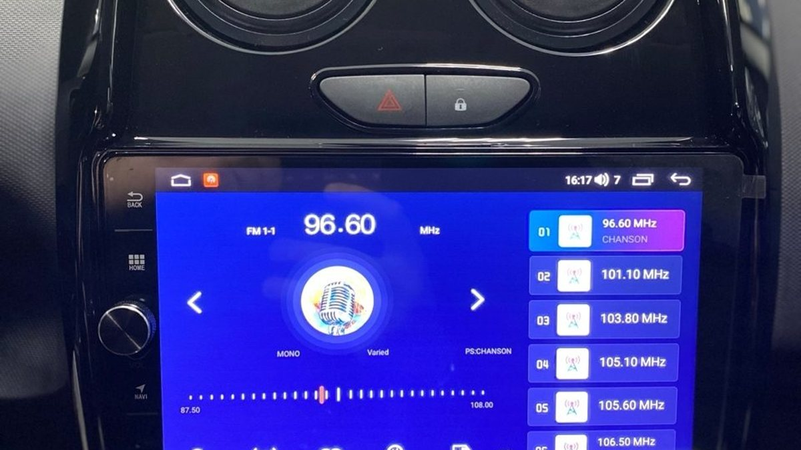

Семь утра, темно, Московский проспект стоит. Телефон с навигатором держится на решётке обдува, и на каждой яме вы ловите его рукой. Провод зарядки болтается у рычага. На экране штатной магнитолы – время, частота радио и надпись, что диск не вставлен. Дисков у вас нет лет десять.
Машина при этом в порядке: мотор тянет, кузов не гниёт, продавать её незачем. Устарела только одна вещь в центре панели. И каждый день она заставляет вас жонглировать телефоном за рулём.

Что не так со штатной магнитолой
Её проектировали под тот мир, в котором машину выпустили. Радио, диск, иногда Bluetooth для звонков, иногда маленький экран. Карт нет или они не обновлялись с завода, приложения не поставить, камера заднего вида – разве что в дорогой комплектации.
Телефон тем временем умеет всё, но не приспособлен для машины. Маленький экран далеко от глаз, держатель вибрирует, зимой на морозе он садится на глазах. И каждый раз, когда вы тянетесь к нему в пробке, вы смотрите не на дорогу.
Что меняется с Android-магнитолой
Андроид магнитола – это по сути планшет, встроенный в панель вместо штатного блока. Большой экран на уровне глаз, и на нём живут привычные приложения: навигатор, музыка, видео на стоянке.
К ней подключают камеру заднего вида, и зимний задний ход во дворе, где сугроб скрыл бордюр, перестаёт быть угадайкой. Можно вывести на экран видеорегистратор. Салон выглядит современнее: вместо пустой пластиковой рамки с кнопками – цельный экран.
Главное же – телефон возвращается в карман. Навигатор крупно перед глазами, звонки через динамики машины, музыка без проводов.

Где на этом спотыкаются
Самая частая ошибка – думать, что магнитола «просто вставляется». На деле в каждой машине своя форма панели, свой разъём и своя логика. Нужна рамка точно под модель, иначе останутся щели и пластик будет скрипеть на каждом стыке.
Дальше – то, что штатная магнитола делала незаметно. Кнопки на руле, иногда экран климата, датчики парковки, штатная камера, настройки машины в меню. Чтобы всё это продолжило работать, нужен правильный переходник под конкретную модель и аккуратное подключение. Ошибка здесь стоит дорого: вы лишаетесь функций, за которые когда-то заплатили вместе с машиной.
И третье – сама магнитола. Устройства с одинаковыми фото внутри бывают очень разными: где-то мало памяти, и через месяц система думает по несколько секунд на каждое нажатие. Об этом лучше знать до покупки, а не после.
Кому это стоит делать, а кому нет
Если в машине штатный блок с большим экраном и всеми функциями, которые вам нужны, менять его ради моды смысла нет. А если вы годами возите телефон на воздуховоде, хотите камеру и навигатор перед глазами, Android-магнитола решает это одним махом.
Перед решением честно ответьте себе: что вы хотите видеть на экране каждый день и что из штатного терять нельзя. От этого зависит и выбор устройства, и сложность установки.
С чего начать
Выпишите марку, модель и год машины, сфотографируйте центральную панель и руль с кнопками. Запишите, без чего вы не готовы ездить: кнопки на руле, камера, климат на экране. С этим списком разговор о магнитоле займёт несколько минут, а не вечер.
Мы в Ярославле – студия «Автостиль», проспект Октября, 82б. Подберём магнитолу под вашу машину, установим и настроим; на работы и оборудование даём гарантию. Подробнее – на странице про Android-магнитолы, телефон +7 902 220-75-55.